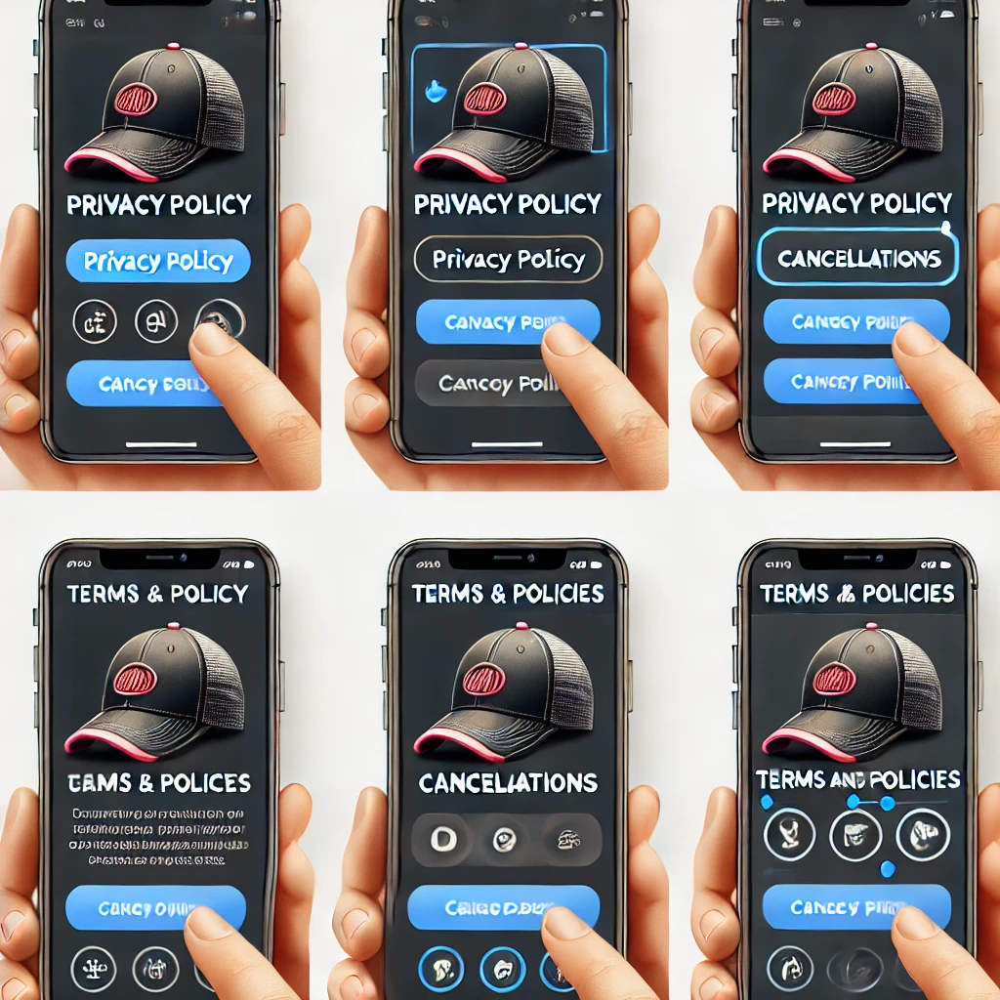

Cómo Conocer las Políticas de Privacidad, Cancelación y Devolución

1. Accede a la página principal de la tienda:
Abre el navegador e ingresa a la página principal de la tienda de gorras.
2. Busca el enlace a las políticas en el pie de página:
Desplázate hasta la parte inferior de la página (pie de página) y busca los enlaces relacionados con las políticas de la tienda. Comúnmente, encontrarás enlaces como:
- Política de privacidad
- Política de cancelación
- Política de devoluciones
3. Haz clic en el enlace correspondiente:
Selecciona el enlace que corresponda a la información que buscas:
- Política de privacidad: Haz clic en este enlace para leer cómo la tienda maneja y protege tus datos personales.
- Política de cancelación: Haz clic aquí para conocer los procedimientos y condiciones bajo los cuales puedes cancelar un pedido.
- Política de devoluciones: Haz clic aquí para leer sobre las condiciones y plazos en los que puedes devolver un producto después de comprarlo.
4. Lee cada política detalladamente:
En cada página de política, encontrarás información sobre los siguientes aspectos:
- Política de privacidad: Detalla qué datos recopila la tienda, cómo los utiliza y cómo los protege.
- Política de cancelación: Describe si es posible cancelar pedidos después de realizar la compra, así como los plazos y requisitos para hacerlo.
- Política de devoluciones: Explica los procedimientos para devolver productos, los requisitos para hacerlo (como el estado del producto y plazos), y si se aplican cargos adicionales.